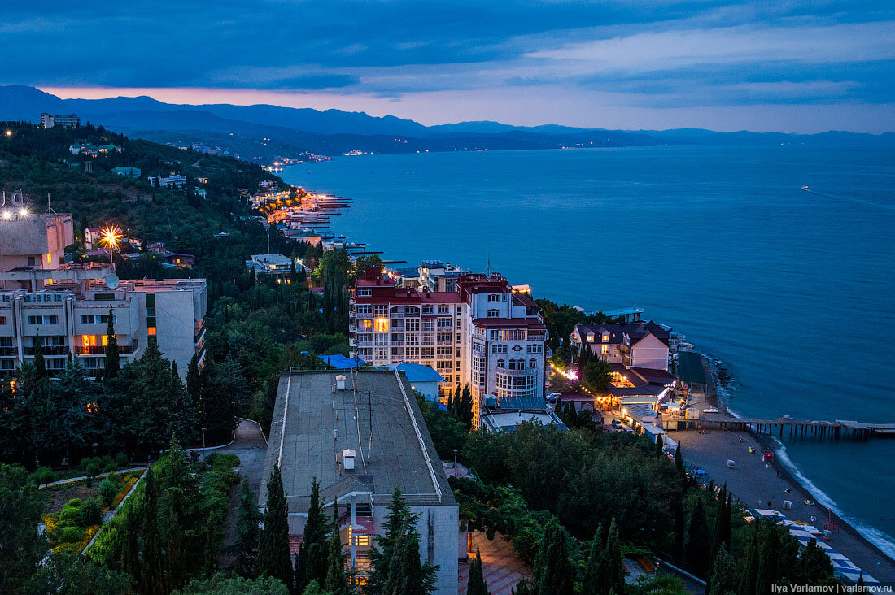

Путишествуя по полуострову, я заметил одну очень важную закономерность. Она заключается в том что города преднозначенные для санаториев и полного отдыха, совершенно не предназначены для молодых людей. выбирая куда поехать сразу отбрасывайте такие варианты как евпотория и тд. так как они не предназначены для веселья!
А вот такие города как Алушта, Ялта Судак, как раз таки на оборот, там сложно провести ночь без приключений!
Если говорить подробнее то Ялта город все таки для людей при деньгах, так как там и цены выше да и развлечения не из дешевых. Алушта вполне средничковый вариант, с красивыми видами многочисленными пляжами и дружелюбным народом.
Больше всего раз я был в алуште и по этому ее рассмотриваем как основной вариант. В этом замечательном городе наверное почти каждый сможет найти жилье по подходящей цене, так как там сдают как квартиры так и дома. Отели подойдут как молодым людям так и в возрасте.
Отель porte mare
замечательный отель расположился в 5 минутах от моря. Все по высшему классу, тех преимуществ и привелегий которые этот отель предоставляет, далеко не все отли за границей могут предоставить, а пляж этого отеля безподобен.
Самое запоминающееся зрелище и чувство, это делфины в конце августа, которые поплывают к берегу так близко, что иногда хвататет пару метров отплыть за буйки и ты уже плаваешь среди умнийших живтных мира.